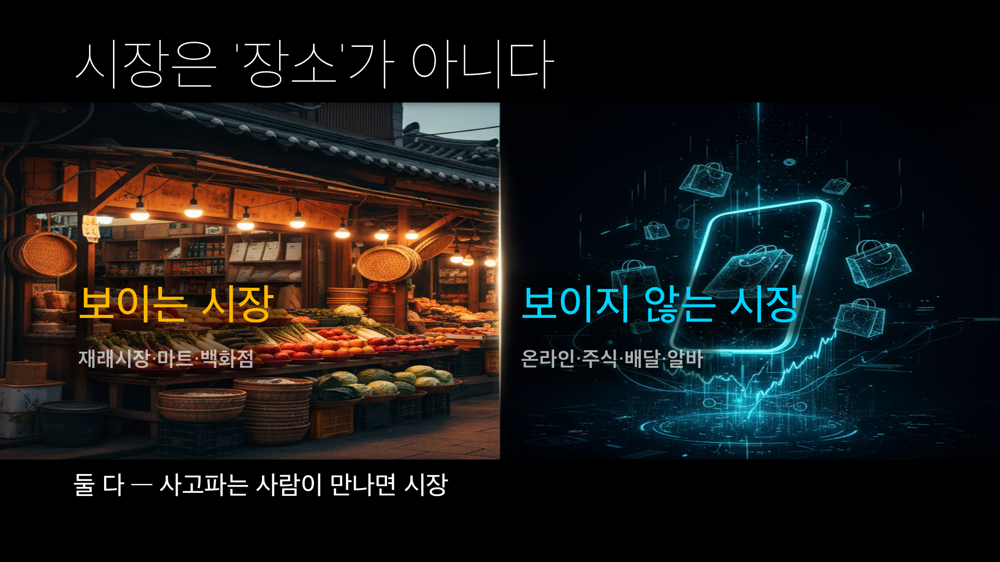
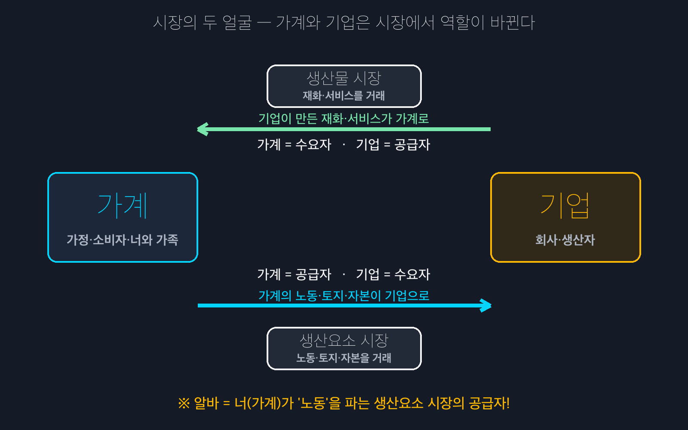

너는 오늘 시장에 안 갔지만, 시장을 10번 지났다
- 시장의 의미와 역할을 설명할 수 있다.
- 시장을 거래 모습·거래 대상·개설 시기 기준으로 분류할 수 있다.
- 수요 / 수요자: 일정 기간 사려는 욕구가 수요, 그 욕구를 가진 사람이 수요자
- 공급 / 공급자: 일정 기간 팔려는 욕구가 공급, 그 욕구를 가진 사람이 공급자
- 재화 / 서비스: 재화 = 형태가 있는 물건 / 서비스 = 형태가 없는 활동(배달·미용)
- 생산요소: 생산에 필요한 노동·토지(자연자원)·자본
🎙️ 자, 솔직히 말해봐. 오늘 시장 갔어? 대부분 "아니, 학교 왔다 집 가는데?" 할 거야. 근데 핸드폰 결제 내역을 한번 열어봐. 편의점 삼각김밥, 배민 떡볶이, 유튜브 프리미엄, 알바비 입금… 거래를 최소 5번은 했지? 시장에 한 발도 안 들였는데. 어떻게 이게 가능하냐고? 끝까지 따라오면 답 나온다.
💡 시장이 없다면? 떡볶이가 먹고 싶으면 밀가루 파는 사람·고추장 파는 사람을 일일이 직접 찾아다녀야 한다. 남는 물건을 팔 때도 사 줄 사람을 일일이 찾아가야 한다. 얼마나 번거로울까?
시장은 재화나 서비스를 사거나 팔려는 사람들이 편리하게 ①하기 위해 모이는 곳이다.
- 사려는 사람 = ② · 팔려는 사람 = ③
(교과서 원문: "시장은 재화나 서비스를 사거나 팔려는 사람들이 편리하게 거래하기 위해 모이는 곳이다." 천재교육 사회②(구정화) p.72~73)
| 역할 | 내용 |
| ④ 거래 | 거래에 필요한 시간·노력을 절약해 줌 → 거래가 효율적이 됨 |
| ⑤ 제공 | 재화·서비스에 대한 다양한 정보(가격·품질 등)를 얻게 해 줌 |
🎙️ 결국 시장은 세상에서 제일 큰 소개팅 주선자야. 살 사람과 팔 사람을 효율적으로 연결해서, 우리가 아낀 시간으로 다른 일·여가를 즐길 수 있게 해 준다.
⭐ 심화 (읽기만) — 시장은 분업과 전문화도 키운다. 각자 잘하는 일에 집중(특화)하고 시장에서 교환하면 사회 전체 생산이 늘어난다. (애덤 스미스 『국부론』)
🎙️ 너 어제 당근마켓에서 뭐 샀지? 그 거래의 시장 건물은 어디 있어? 없어. 근데 사는 사람·파는 사람·물건·가격, 다 있었잖아. 그게 바로 보이지 않는 시장이야. 물리적 공간이 있어야만 시장인 게 아니다.

| 종류 | 뜻 | 사례 |
| ⑥ 시장 | 거래 장소가 눈에 보이는 구체적 시장 | 재래시장·대형마트·백화점 |
| ⑦ 시장 | 장소가 눈에 안 보여도 거래가 이뤄지는 시장 | 온라인 쇼핑·주식 시장·외환 시장·노동 시장 |
| 종류 | 거래 대상 | 수요자 / 공급자 | 사례 |
| ⑧ 시장 | 완성된 재화·서비스 | 가계=수요자 / 기업=공급자 | 편의점·배달앱·영화관 |
| ⑨ 시장 | 생산에 필요한 노동·토지·자본 | 가계=공급자 / 기업=수요자 | 구인구직(노동)·부동산(토지)·주식(자본) |
(교과서 원문: "시장은 거래하는 상품에 따라 생산물 시장과 생산 요소 시장으로 나뉜다. 생산물 시장은 가계가 수요자, 기업이 공급자인 시장이고, 생산 요소 시장은 노동·자본·자연 자원(토지)을 거래하는 시장으로 가계가 공급자, 기업이 수요자인 시장이다." 천재교육 사회②(구정화) p.74~75)

💡 알바천국에서 알바 구하는 것도 시장이야 — 너의 노동을 파는 ⑩ 시장. 여기선 너(가계)가 공급자, 사장님(기업)이 수요자!
| 종류 | 뜻 | 사례 |
| ⑪ 시장 | 날마다 늘 열려 있는 시장 | 대형마트·백화점·편의점 |
| ⑫ 시장 | 정해진 날에만 열리는 시장 | 5일장·7일장 |
⭐ 심화 (읽기만) — 시장은 경쟁 정도로도 나눈다: 파는 기업이 하나뿐인 독점 시장(옛 철도·우편), 몇 개뿐인 과점 시장(라면·통신). 공급자가 적을수록 가격을 마음대로 정하기 쉬워진다.
시장은 ① 사고파는 사람이 거래하러 모이는 곳이고, ② 시간·노력을 줄여(효율적 거래) 정보를 주며, ③ 모습(보이는/안 보이는)·대상(생산물/생산요소)·시기(상설/정기) 3기준으로 나뉜다.
아래 6개 시장 카드를 각자 두 기준으로 분류해 보자. (혼자 먼저 → 다 같이 정답 확인)
| 시장 카드 | 거래 모습 (보이는 / 안 보이는) | 거래 대상 (생산물 / 생산요소) |
| 🛒 재래시장 | ||
| 🏬 백화점 | ||
| 📦 당근마켓 | ||
| 🛵 배달의민족 | ||
| 📈 주식 시장 | ||
| 💼 알바천국(구인구직) |
오늘(또는 어제) 내가 한 거래 3가지를 적고, 보이는/안 보이는 시장인지 분류해 보자.
| 내가 한 거래 | 보이는 / 안 보이는 |
| (예) 편의점에서 음료 삼 | 보이는 |
다음이 시장이 맞는지 O/X로 표시하고, 한 줄 이유를 써 보자.
| 상황 | O/X | 이유 |
| 온라인 쇼핑몰(무신사) | ||
| 학교 급식 | ||
| 유튜브 광고로 돈 버는 것 |
Q1. 시장을 친구에게 한 문장으로 설명한다면? (단, '시장 = 마트'라고 하면 안 됨)
Q2. 네가 가장 자주 쓰는 보이지 않는 시장 1개는? 거기서 너는 수요자야, 공급자야?
Q3. 알바는 노동을 파는 생산요소 시장이다. 그럼 너 자신은 미래에 어떤 시장에서 공급자가 될까?